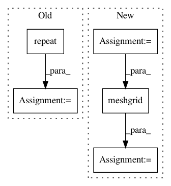

85fd9ee010628a327a3e5b223106c3718c234cbd,kornia/utils/grid.py,,create_meshgrid3d,#Any#Any#Any#Any#,42
Before Change
else:
z = torch.linspace(0, depth - 1, depth)
z = z.view(depth, 1, 1, 1)
grid3d = torch.cat([z.repeat(1, height, width, 1).contiguous(), grid2d.repeat(depth, 1, 1, 1)], dim=3)
return grid3d.unsqueeze(0) // 1xDxHxWx3
After Change
ys = torch.linspace(-1, 1, height)
zs = torch.linspace(-1, 1, depth)
else:
xs = torch.linspace(0, width - 1, width)
ys = torch.linspace(0, height - 1, height)
zs = torch.linspace(0, depth - 1, depth)
// generate grid by stacking coordinates
base_grid: torch.Tensor = torch.stack(
torch.meshgrid([zs, xs, ys])).transpose(1, 2) // 3xHxW
return base_grid.unsqueeze(0).permute(0, 3, 4, 2, 1) // 1xHxWx3
In pattern: SUPERPATTERN
Frequency: 3
Non-data size: 5
Instances
Project Name: arraiy/torchgeometry
Commit Name: 85fd9ee010628a327a3e5b223106c3718c234cbd
Time: 2019-11-29
Author: ducha.aiki@gmail.com
File Name: kornia/utils/grid.py
Class Name:
Method Name: create_meshgrid3d
Project Name: dask/dask-image
Commit Name: aab843410171a11dfd721b1d9cc980bee4420427
Time: 2018-09-02
Author: jakirkham@gmail.com
File Name: dask_image/ndfourier/_utils.py
Class Name:
Method Name: _get_freq_grid
Project Name: ultralytics/yolov3
Commit Name: 14e451962036515076b17b5bc01e89282f62b681
Time: 2019-04-21
Author: glenn.jocher@ultralytics.com
File Name: models.py
Class Name:
Method Name: create_grids